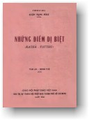

|
BuddhaSasana Home Page |
Vietnamese, with Unicode VU Times font |
|  |
THERAVĀDA KATHĀVATTHU TÂM AN - MINH TUỆ dịch |
|
Xin lưu ý: Cần có phông UnicodeViệt-Phạn VU Times cài vào máy để đọc các chữ Pāli. |
|
CHƯƠNG IX
1. VẤN ÐỀ ÐOẠN TẬN TRIỀN
CÁI Ðiểm tranh luận: Triền được đoạn tận với người thấu rõ Niết Bàn. Theo chú giải: Theo giáo pháp, chúng ta tin rằng người nào thấu rõ (a) thế gian (pháp hữu vì) đầy nguy hiểm, (b) Niết bàn là tối thượng, thì khi ấy triền được đoạn tận. Nhưng phái Andhakas chỉ thấy được một trong hai trường hợp này, họ cho rằng chỉ với trường hợp sau Triền mới được đoạn tận. Quan niệm đó được chỉnh đốn lại bởi lý luận của phái Theravadins. (1) Th: - Có phải triền cũng được đoạn tận khi pháp thế gian (Sakhārā) được xem như là vô thường? Dĩ nhiên Ngài chấp nhận điều này. Vì vậy, Ngài không nên tự hạn chế trong quan điểm của Ngài. (2) Ngài cũng thừa nhận Triền được đoạn tận khi pháp thế gian được xem là vô thường, đầy đau khổ, như bệnh tật, như mun nhọt, như mũi tên, như sự rủi ro, như sự hoạn nạn, như sự tai biến, như ác kiến, như sự nguy biến, như sự khó khăn, như sự phá hủy, là chỗ không nương trú, không nơi ẩn dật, không nơi trốn tránh, không được bảo vệ, là chỗ trống không là vô ngã đầy những hiểm nguy và bất định. Nhưng bằng cách này, quan niệm của Ngài sẽ trở thành một chiều. (3) Như vậy, Ngài chấp nhận rằng (trong cùng một lúc) một người có thể khảo sát được cả hai sự vô thường và các điều kể trên của pháp thế gian, và thấu rõ Niết Bàn? Ngài không đồng ý sao? Nhưng Ngài đã thừa nhận rằng triền được đoạn tận khi người này thấu rõ cả hai điều trên. Ngài có thừa nhận một người có thể thấu rõ như vậy không? Nhưng có phải điều này không làm phức tạp cho chúng ta khi có hai thứ tâm, hai xúc, hai thọ... Trong cùng một lúc? (4) A.: - Ngài bác bỏ quan niệm của chúng tôi. Nhưng có phải Ðức Thế tôn đã từng thuyết rằng: "Này các Tỳ kheo, ở đây có hạng người sống tùy quán lạc trong Niết bàn, tưởng lạc, cảm thọ lạc trong tất cả thời liên tục, không có gián đoạn, với tâm thắng giải, với tuệ thể nhập. Vị ấy, với sự đoạn diệt các lậu hoặc... Sau khi chứng ngộ, chứng đạt, an trú. Ðây là hạng người thứ nhất đáng được cung kính... là ruộng phước vô thượng ở đời"? (1) Do vậy, chắc chắn một người thấu rõ hạnh phúc của Niết - Bàn thì Triền được đoạn tận.
2. VẤN ÐỀ BẤT TỬ LÀ ÐỐI
TƯỢNG CỦA TRIỀN Ðiểm tranh luận: Bất tử là đối tượng của Tâm câu hữu với Triền. Theo chú giải: Quan niệm này của phái Pubbaseliyas, do sự hiểu bất cẩn (2) khi tham khảo đoạn kinh kẻ phàm phu tưởng tới Niết bàn như là Niết bàn. (1) Th: - Nếu Ngài quan niệm như vậy, có phải Ngài cũng chuẩn bị để thừa nhận rằng bất tử là đối tượng của tâm câu hữu với triền, Hệ phược, Bộc lưu, Tùy Miên, Kiết sử, Thủ, Phiền não? Có phải Triền không là đối tượng câu hữu với những pháp ngược lại? (2 - 4) Ngài thừa nhận Bất tử liên hệ với tâm có ái, sân, si, nên được sanh khởi. Nhưng có phải Ngài cũng thừa nhận Bất tử tự nó dẫn đến ái, sự thèm muốn, sự ước mơ, sự say mê đắm đuối và lòng khát khao dục vọng? Có phải Bất tử đưa đến sự sân hận, phẫn nộ không? Có phải bất tử đưa đến si mê, sự thiếu trí, sự mê muội, đưa đến sự đình chỉ của trí tuệ, đưa đến sự đoạn diệt của trí tuệ, đưa đến sự phá hoại trí tuệ, làm ngưng lại sự chứng ngộ Niết - Bàn? Có phải Bất tử là những pháp đối nghịch với những pháp này? Như vậy, làm thế nào Ngài có thể nói rằng Bất tử câu hữu với ái, sân, si, vẫn sanh được khởi? (5) Với tất cả những pháp này, Ngài có thể xác định do tâm câu hữu với sắc mà các pháp này được sanh khởi. Nhưng sắc không phải là bất tử. (6) Ngài cũng không được nói rằng sở dĩ triền sanh khởi là do sắc pháp, và sắc pháp thì không dẫn đến triền, Bộc lưu, Tùy miên, Hệ phược cùng những pháp bất thiện khác. Do đó, làm thế nào Ngài có thể xác nhận như vậy đối với Bất tử: Sở dĩ Triền sanh khởi là do Bất tử, Bất tử không dẫn đến Triền, Bộc lưu, tùy miên...? Hay là, sở dĩ ái sân, si, si sanh khởi là do Bất tử, tuy bất tử không phải là ái, sân, si? (7) P: - Nhưng có phải Ðức Thế tôn đã từng thuyết rằng "Kẻ phàm phu tưởng tri Niết bàn là Niết bàn... Vì tưởng tri Niết bàn là Niết - Bàn, nó nghĩ đến Niết bàn, nghĩ đến (tự ngã) đối chiếu với Niết bàn, nghĩ đến (tự ngã) như là Niết bàn, nó nghĩ 'Niết bàn là của ta', dục hỷ Niết bàn. Vì sao vậy? Ta nói người ấy không liễu tri Niết bàn"? (1) Do vậy, Bất tử là đối tượng của tâm chưa hoàn toàn giải thoát.
3. VẤN ÐỀ SẮC
CÓ THỂ BIẾT CẢNH Ðiểm tranh luận: Sắc có thể vừa là cảnh, vừa là pháp nhận biết cảnh. Theo chú giải: Quan niệm này của phái Uttarāpathakās, cho rằng sắc có thể định danh là Sārammana (biết cảnh) hay sắc có thể là sở duyên (Xem Ārammana Paccayo trong bộ Patthāna). Thực ra, nó chỉ là năng duyên cho các danh pháp nhận biết. Quan điểm này trình bày sự phân biệt hai ý nghĩa của Ārammana. (1) Th: - Nếu quan niệm như vậy, Ngài cũng phải thừa nhận sắc hay thân có những đặc tính của danh pháp như có sự để ý, sự chú ý, sự phản kháng, sự mong mỏi, sự cố tâm, có mục đích. Những pháp này Ngài chỉ thừa nhận đối với tâm, nhưng đối với sắc thì Ngài từ khước. (2) Tất cả những đặc tính này, hay một trong những đặc tính này , Ngài có thể công nhận đối với sở hữu tâm, như Xúc, Thọ, Tưởng, Tư, Tâm, Tín, Cần, Niệm, Ðịnh, Tuệ, Ái, Sân, Si, Ngã mạn, Tà kiến, Hoài nghi, Hôn trầm, Phóng dật, Vô tàm, Vô úy - Tất cả những sở hữu này đều là pháp biết cảnh. Nhưng sắc pháp không phải là một trong những pháp ấy, do đó những đặc tính kể trên không thể được công nhận về sắc pháp được. (3) Ngài từ khước tất cả những đặc tính của danh pháp như là sự chú ý, sự mong mỏi, sự cố tâm... trong trường hợp đối với danh pháp. Nhưng Ngài vẫn tuyên bố rằng sắc pháp là "pháp biết cảnh" - pháp này thực ra chỉ áp dụng cho xúc, thọ, tưởng... mà Ngài đã thừa nhận là không thiếu những đặc tính của danh pháp... (4) U.: - Nhưng có phải sắc pháp không có sự liên hệ với cảnh không? Dĩ nhiên Ngài đồng ý. Do vì có sự liên hệ này nên rất hữu lý khi dùng danh xưng "pháp biết cảnh " cho sắc pháp (vì cảnh là một trong 24 duyên).
4. VẤN ÐỀ PHÁP
TÙY MIÊN KHÔNG BIẾT CẢNH Ðiểm tranh luận: Tùy miên (còn gọi là thất tiềm thùy) là pháp không biết cảnh. Theo chú giải: Quan niệm này của các phái Andhakas và Uttarapathakas cho rằng những pháp được gọi là tùy miên, là những pháp khác với tâm biết, không có điều kiện, bất định nên không đồng cảnh với tâm. Lý luận của phái Theravadins đã trình bày rõ ràng những loại pháp "không biết cảnh". (1) Th: - Như vậy, hình thức của tùy miên phải là sắc pháp, là Niết bàn, hay là một trong năm xứ, hay là một trong năm cảnh. Ngài từ khước. Chúng ta hãy lấy hình thức tùy miên thứ nhất là Dục ái Tùy miên. Nếu dục ái tùy miên này không biết cảnh thì có phải Ngài cũng không xác nhận rằng nó giống như tất cả những biểu hiện của dục ái như Dục Triền, Dục bộc, Dục phối, Dục tùy miên? Có phải Ngài không xác nhận rằng dục ái tùy miên không phải là dục triền... Dục phối, mà chúng có cùng một cảnh không? (2) Lại nữa, dục ái tùy miên thuộc uẩn nào? Ngài cho rằng trong hành uẩn. Nhưng dục ái tùy miên có cùng một cảnh như các uẩn còn lại, điều này Ngài phải chấp nhận. Như vậy, làm thế nào Ngài có thể duy trì quan niệm của Ngài được? (3) Nếu Ngài chấp nhận (a) Dục ái tùy miên là hành uẩn, nhưng hành uẩn không biết cảnh, thì Ngài cũng phải nói như vậy đối với (b) dục ái chung chung. Nhưng Ngài từ chối (dục ái tùy miên như là một phần trong dục ái). (4) Như vậy, Ngài phải xác nhận có hai loại hành uẩn (a) hành uẩn không biết cảnh, (b) hành uẩn biết cảnh. Có hai hành uẩn một phần biết cảnh và một phần không biết cảnh? Ngài còn phải xác nhận như vậy đối với những uẩn khác... nhưng Ngài không thể xác nhận được... (5) Ðối với năm tùy miên, kế tiếp phẫn uất tùy miên, Ngã mạn tùy miên, Tà kiến tùy miên, Hoài nghi tùy miên và hữu ái tùy miên - Cách lập luận cũng tương tự như trên. Lấy tùy miên thứ bảy là vô minh tùy miên, nếu vô minh tùy miên không biết cảnh thì nó cũng không có những đặc tính như vô minh Bộc lưu, Vô minh phối, Vô minh kiết sử, Vô minh triền. Ðiều này Ngài từ khước (Vô minh tùy miên chỉ là một phần pháp của Vô minh). (6 - 8) Lý luận về uẩn được áp dụng giống hệt như trong hình thức của tùy miên. (9) A.U: - Nhưng có phải không hữu lý khi nói rằng, khi một người phàm phu suy nghĩ về một pháp thiện hay pháp vô ký thì người ấy được gọi là "người đang có tùy miên"? Và có phải (trong cùng một lúc) không có những tùy miên? (đang ngũ ngầm trong người ấy) không biết cảnh? (10) Th: - Nhưng Ngài có thể nói rằng: Trong cùng một lúc, người này có ái dục trong tâm và Ngài từ khước rằng ái dục không biết cảnh được...
5. VẤN ÐỀ TUỆ KHÔNG BIẾT
CẢNH Ðiểm tranh luận: Tuệ giải thoát là pháp không biết cảnh. Theo chú giải: Vì một vị A-la-hán không thể nói được rằng bị liệt tuệ nên Tuệ của vị này được gọi là đáo bỉ ngạn và không có cảnh sắc làm đối tượng, nghĩa là, khi tâm nhãn thức của vị ấy sanh khởi thì chỉ thâu nhận cảnh sắc trong lộ trình nhãn thức mà thôi. Và do đó, phái Andhakas đã có quan niệm sai lầm, cho rằng Tuệ của vị A-la-hán không biết cảnh. (1) Th: - Nếu như vậy, Tuệ cũng là sắc, là Niết bàn, là một trong năm xứ nội hoặc năm xứ ngoại (những pháp này đều không biết cảnh pháp) Nhưng Ngài từ khước... Ngài cũng phủ nhận Tuệ quyền, Tuệ lực, Chánh kiến, Trạch pháp giác chi là không biết cảnh mà Ngài đang xác định ngược lại như thế. Như vậy tại sao lại trừ Tuệ (giải thoát) (2 - 4) Ở đây, Ngài cũng khẳng định rằng Tuệ thuộc về hành uẩn. Nhưng trong luận điểm trước. Ngài không thể nào cho rằng hành uẩn một phần không biết cảnh, còn một phần biết cảnh. Và Ngài không thể nào xác định được Tuệ nào nằm trong hành uẩn thì biết cảnh, trong khi Tuệ giải thoát cũng nằm trong hành uẩn ấy lại không biết cảnh. (5) A: - Ngài từ khước Tuệ giải thoát không có cảnh, có hữu lý không khi nói rằng Bậc A-la-hán có Tuệ giải thoát hoàn toàn (đáo bỉ ngạn) khi vị này đang nhìn cảnh sắc? Th: - Vâng, rất hữu lý. A: - Tuệ của vị ấy trong cùng một lúc có biết cảnh không? Th: - Không, không thể nói như vậy. (6) Nhưng nếu Ngài thay thế "tri kiến hoàn toàn" cho "Tuệ giải thoát hoàn toàn", thì chính Ngài phải thừa nhận rằng vị A-la-hán là bậc có tri kiến hoàn toàn khi thấy cảnh sắc, và trong cùng lúc ấy, Ngài phủ nhận tri kiến của vị ấy lại biết cảnh trong suốt tiến trình của tâm thức.
6. VẤN ÐỀ TÂM BIẾT CẢNH
QUÁ KHỨ Ðiểm tranh luận: Tâm có cảnh quá khứ là pháp không biết cảnh. Theo chú giải: Quan niệm này của phái Uttarāpathakas, cho rằng vì cảnh quá khứ và vị lai không thực sự hiện hữu nên tâm nhớ lại cảnh quá khứ là tâm không biết cảnh. (1) Th: - Nhưng có phải Ngài thừa nhận có một pháp như vậy là pháp biết cảnh quá khứ? Như vậy, làm thế nào Ngài có thể tự mâu thuẫn trong sự xác nhận ấy? (2) Lại nữa, có phải không có sự nhớ tưởng, sự cố tâm, sự phản kháng... là những pháp quá khứ chăng?
7. VẤN ÐỀ TÂM BIẾT CẢNH
VỊ LAI Ðiểm tranh luận: Tâm có cảnh vị lai là pháp không biết cảnh. Theo chú giải: Quan niệm này của phái Uttarāpathakas. (1 - 2) Giống hệt như trong luận điểm 6, "Vị lai" được thay thế cho "Quá khứ" . (3) Th: - (Tiếp tục) Dĩ nhiên Ngài thừa nhận pháp được gọi là hiện tại thì có sự mong mỏi, sự nhớ tưởng, sự cố tâm... Và do đó, tâm có cảnh hiện tại là pháp biết cảnh. Và Ngài cũng phải thừa nhận rằng có sự mong mỏi, sự nhớ tưởng, sự cố tâm... Trong quá khứ cũng như vị lai. Nhưng theo Ngài, trong cả hai trường hợp, là pháp không biết cảnh. (4) Tại sao không nói rằng khi có sự mong mỏi, sự nhớ tưởng, sự cố tâm... Thuộc hiện tại và tâm này liên hệ với cảnh hiện tại là tâm không biết cảnh? (5) A.: - Nhưng có phải Ngài thừa nhận rằng "Cảnh quá khứ" không hiện hữu (trong hiện tại) không? do vậy, chắc chắn tâm liên hệ với cảnh quá khứ (và vị lai) là pháp không biết cảnh.
8. VẦN ÐỀ CHI TẦM VÀ CÁC
SỰ LIÊN HỆ Ðiểm tranh luận: Tầm liên quan đến tất cả tâm. Theo chú giải: Tầm được biểu theo hai cách (1) khi có tâm làm đối tượng (2) khi phối hợp với tâm như một sở hữu. Nếu không có sự chi phối của bất cứ định luật tự nhiên (Niyama) nào thì một tâm như vậy không thể thành cảnh như tầm và quan niệm này được xem là rất hữu lý. Nhưng vì có những tâm tùy thuộc vào tầm nên tầm không có sự phối hợp trong tất cả tâm (Ở đây, ngược lại với quan niệm ấy mới hữu lý). Và phái Uttarā đã duy trì quan niệm này vì không có sự phân biệt rõ ràng như đã trình bày trên đây. (1) Th: - Nếu quan niệm này rất hữu lý, Ngài cũng phải chuẩn bị để thừa nhận rằng những sở hữu tâm khác như Tư, Lạc, Hỷ, Khổ, Ưu, Xã, Tín, Cần, Niệm, Ðịnh, Tuệ, Ái, Sân,... Vô tàm, Vô úy, phóng dật đều có liên hệ với tất cả tâm. Nhưng Ngài chưa chuẩn bị để thừa nhận như vậy... (2 - 4) Ngược lại, có phải có Ðịnh chỉ có Tứ mà không có Tầm (Vô Tầm Hữu tứ) cũng như định không có tầm, không có Tứ (Vô tầm vô tứ). Thật ra, có phải có 3 loại Ðịnh mà Ðức Thế tôn đã từng phân biệt (1) Ðịnh hữu tầm hữu tứ (2) Ðịnh vô tầm hữu tứ (3) định vô tầm vô tứ? (1) Do vậy, quan niệm của Ngài là sai lầm.
9. VẤN ÐỀ TẦM VÀ TỨ LÀ
ÐIỀU KIỆN PHÁT SANH NGÔN NGỮ Ðiểm tranh luận: Khi suy xét hay nghĩ ngơi (Tầm và Tứ) thì phát sanh ngôn ngữ (Thinh). Theo chú giải: Do từ câu kinh "Ngôn ngữ do tầm và tứ làm sở sanh" nên phái Pubbaseliyas cho rằng âm thanh sanh khởi trong lộ trình ý thức mà không phải là ngũ thức vì chúng đơn thuần chỉ là "sự rung động" (1) (Vipphāra) của Tầm và Tứ. Phái Theravadins đã chỉnh đốn lại quan niệm này bằng những lý luận dưới đây: (1) Th: - Nếu quan niệm này rất hữu lý, Ngài cũng phải xác nhận rằng Thinh phát từ xúc chỉ đơn thuần là sự phát ra của xúc, Thinh phát sanh từ Thọ chỉ đơn thuần là sự phát sanh của Thọ. Tương tự đối với Tưởng, Tư, Tâm, Niệm, Tuệ,... Ðiều nay Ngài từ khước.... (2) Có phải Ngài cũng thừa nhận Thinh là sự phát ra của Tầm, được nhận thức bởi nhĩ, tác động vào nhĩ và đi vào đạo lộ của nhĩ? Ðiều này Ngài từ khước, Ngài lại xác nhận Thinh như vậy không được nhận thức bởi nhĩ... v..v... Do đó, Ngài có thể quan niệm như thế nào về Thinh?
10. VẤN ÐỀ NGÔN NGỮ PHÙ
HỢP VỚI TƯ TƯỞNG Ðiểm tranh luận: Ngôn ngữ không phù hợp với tư tưởng (Nghĩ một cách nói một cách khác). Theo chú giải: Vì có người có thể quyết định (suy nghĩ về một điều) và nói về một điều khác, do đó không có sự phù hợp giữa tư tưởng và ngôn ngữ. Ngôn ngữ có thể hoạt động ngay cả khi không có sự suy nghĩ, Phái Pubbaseliyas đã quan niệm như vậy. (1) Th: - Nếu quan niệm như vậy thì một chúng sanh khi phát ngôn không có sự phù hợp với Xúc, Thọ, Tưởng, Tư, hay bất cứ một sở hữu tâm nào. Nhưng chắc chắn, như Ngài đồng ý khi ngôn ngữ phát ra thì có xúc, thọ... (2) Lại nữa, Ngài cũng phải từ khước rằng ngôn ngữ có sự phù hợp với sự chú ý, sự suy tư, nghĩ ngợi, sự cố tâm có mục đích. Ðiều này Ngài sẽ không từ khước. vì ngược lại mới đúng sự thật. (3) Ngài thừa nhận rằng, ngôn ngữ bị tâm chi phối, đồng hiện hữu với tâm, đồng căn với tâm. Tuy nhiên điều này mâu thuẫn với quan niệm của Ngài. (4) Lại nữa, chính Ngài cho rằng có người nói những điều mà họ không muốn nói, đàm luận những điều mà họ không muốn đàm luận, diễn thuyết những điều mà họ không muốn diễn thuyết. Chắc chắn trường hợp trái ngược mới xảy ra. (5) P: - Ngài cho rằng tôi sai lầm, nhưng Ngài phải thừa nhận có người khi nói, đàm luận, diễn thuyết, về một điều, thì cùng lúc ấy, tâm họ có thể nghĩ về một điều khác. Do đó quan niệm của tôi có thể bảo vệ được.
11. VẤN ÐỀ HÀNH ÐỘNG PHÙ
HỢP VỚI TƯ TUỞNG Ðiểm tranh luận: Hành động không phù hợp với tư tưởng (nghĩ một cách làm một cách khác). Theo chú giải: Quan niệm này của phái Pubbaseliyas. (1 - 3) Th: - (Cách lý luận tương tự (1 - 3), 10, chương IX). (4) Lại nữa, chính Ngài cũng thừa nhận điều này, một người vẫn bước tới, bước lui, hay nhìn sau, nhìn trước, hay nghiêng mình cúi xuống dù họ không cố ý biểu hiện những hành động đó. Chắc chắn trường hợp ngược lại sẽ xảy ra. (5) P - Ngài cho rằng tôi sai lầm, nhưng có phải không xảy ra trường hợp một người nghĩ rằng "Tôi sẽ đi hướng này" lại đi hướng khác hay... nghĩ rằng "Tôi sẽ cầm vật này" lại cầm vật khác? Từ đây quan niệm của tôi có thể bảo vệ được.
12. VẤN ÐỀ QUÁ KHỨ VỊ LAI
VÀ HIỆN TẠI Ðiểm tranh luận: Kinh nghiệm quá khứ và vị lai vẫn còn hiện hữu. Theo chú giải: Phái Andhakas cho rằng với bậc đã chứng đạt Bất thiền thì những kinh nghiệm về quá khứ và vị lai vẫn hiện hữu trong hiện tại dù tất cả không xảy ra đồng thời. Vì vậy họ quan niệm quá khứ và vị lai của bậc chứng đạt Bát Thiền vẫn còn hiện hữu trong hiện tại. (1) Th: - Nhưng có phải quá khứ chưa diệt mất, chưa bị hoại lìa, chưa bị thay đổi, chưa đi đến kết thúc, chưa tiêu hoại? (2) Và có phải vị lai chưa ra, chưa trở thành, chưa hiện hữu, chưa đi qua, chưa có những biểu hiện? Như vậy, làm thế nào Ngài có thể cho rằng những pháp quá khứ và vị lai vẫn thực sự hiện hữu? (3) Có phải một người có sự hiện hữu của sắc uẩn hiện tại,cũng có sự hiện hữu của sắc uẩn quá khứ và sắc uẩn vị lai? Như vậy Ngài phải thừa nhận có ba sắc uẩn. Tương tự, nếu một người có sự hiện hữu của năm uẩn quá khứ và năm uẩn vị lai, cũng như năm uẩn hiện tại (sắc và danh) Ngài phải thừa nhận có 15 uẩn... (4 - 6) Lý luận tương tự đối với 12 xứ, 18 giới và 22 quyền. (7) A: - Nhưng có phải không có bậc đã chứng đạt được Bát thiền giải thoát vẫn còn có thể nhận được bốn tầng Thiền Sắc giới, 4 tầng thiền Vô Sắc (là những Thiền hiệp thế)? Do vậy, có phải chắc chắn là hữu lý khi nói rằng kinh nghiệm quá khứ và vị lai của một người vẫn hiện hữu? -ooOoo- CHƯƠNG X
1. VẤN ÐỀ DIỆT ÐỘ Ðiểm tranh luận: Trước khi ngũ uẩn tìm kiếm tục sinh chưa bị diệt, ngũ uẩn vô ký sanh lên (ngũ uẩn của kiếp sống trước chưa chết, ngũ uẩn của kiếp sống sau sanh lên). Theo chú giải: Một số tông phái như Andhakas cho rằng trước khi tiềm thức (Bhavaṅga) chuyển động để tìm đời sống mới kế tiếp, nếu một cái tâm khác với 4 uẩn vô ký và sắc uẩn chưa được sanh ra, và như vậy đời sống kế tiếp sẽ bị gián đoạn. (1) Th: - Như vậy, có phải có 10 loại uẩn? Và 10 loại uẩn này gặp nhau trong cùng một lúc? Nếu Ngài từ khước thì quan niệm của Ngài còn chấp nhận được không? Nếu Ngài đồng ý, Ngài phải trả lời cách hiệp nhau về từng đôi một của mỗi uẩn (điều này trái ngược với chính truyền). (2) Lý luận tương tự, nếu Ngài duy trì chỉ có 4 uẩn vô ký sanh lên, thì thay thế "9" uẩn cho "10" uẩn. (3) Và lý luận cũng tương tự nếu Ngài duy trì chỉ có tuệ tục sinh sanh lên, thì thay thế "6" uẩn cho "9" uẩn. (4) A.: - Khi có 5 uẩn tìm kiếm tục sinh diệt di, có phải Ðạo sanh lên không? Th: - Vâng. A: - Có phải một người đã chết, sự tử biệt làm cho Ðạo phát triển không?
2. VẤN ÐỀ ÐẠO VÀ SẮC PHÁP Ðiểm tranh luận: Sắc pháp của bậc đang tu tập Bát Thánh đạo được bao hàm trong Ðạo đó. Theo chú giải: Các phái Mahimsāsakas, Sammitiyas và Māhasanghikas cho rằng ba chi đạo chánh ngữ, chánh nghiệp và chánh mạng thuộc phần Sắc pháp. Thực ra, ví những chi đạo này thuần túy là danh pháp mà không là sắc pháp. (1) Th: - Ngài cũng phải thừa nhận Sắc pháp ấy (giống như những chi Ðạo) là pháp biết cảnh, có những đặc tính như sự nhớ tưởng, sự lưu tâm, sự tác ý, sự quyết định, Ngài tứ chối điều này và nói một cách chính xác thì chắc chắn quan niệm ngược lại mới hữu lý. (2 - 3) Ba chi đạo (mà Ngài cho rằng có liên hệ với Sắc pháp) là chánh ngữ, chánh nghiệp, chánh mạng như Ngài đã thừa nhận là pháp không biết cảnh, không có những đặc tính của danh pháp đã kể trên. (4 - 5) Nhưng Ngài lại thừa nhận năm chi đạo khác Chánh kiến, Chánh tư duy, Chánh tinh tấn, Chánh niệm và Chánh định - là những pháp biết cảnh và có những đặc tính danh pháp đã kể trên. (6 - 7) Nếu Ngài xác nhận sự vắng mặt của những đặc tính danh pháp trong 3 chi đạo Chánh ngữ, Chánh nghiệp, Chánh mạng thì Ngài cũng phải xác nhận 5 chi đạo còn lại - Chánh kiến... Chánh định - cũng không có những đặc tính danh pháp ấy. (8) M. S. M.: - Nhưng Ngài thừa nhận rằng Chánh ngữ, Chánh nghiệp, và Chánh mạng là những chi đạo (và có những biểu hiện của Sắc pháp). Như vậy Ngài chắc chắn Sắc pháp của bậc đang tu tập Thánh đạo cũng bao hàm trong Ðạo.
3. VẤN ÐỀ CHỨNG ÐẠO VÀ
NGŨ THỨC Ðiểm tranh luận: Một bậc có thể chứng ngộ Ðạo trong khi đang hưởng cảnh từ ngũ thức. Theo chú giải: Một vài tông phái như Mahāsanghikas, với sự tham khảo từ đoạn kinh "khi một người có sắc bằng nhãn, người ấy không nắm giữ tướng chung, không nắm giữ tướng riêng...." Nên đã có quan niệm này. Trong luận điểm này, phái Theravadins đã chỉnh đốn lại quan niệm đó. (1) Th: - Nhưng có phải Ngài phải chấp nhận rằng: i - Ngũ thức phát sanh
do nương vào vật và đối tượng sanh khởi. Nếu tất cả những điều này là sự thật, thì quan niệm của Ngài không thể nào là hữu lý được. (2) Khảo sát tâm nhãn thức và một trong những đối tượng của Ðạo - Sự tiêu diệt (1) có phải tâm nhãn thức liên hệ đến sự "tiêu diệt" không? Nếu Ngài từ khước, Ngài tự mâu thuẫn với quan niệm của Ngài, Nếu Ngài đồng ý, có phải giáo pháp đã từng nói rằng chẳng những do nhãn và cảnh sắc, nhãn thức sanh khởi" mà còn "do nhãn và sự Tiêu diệt, nhãn thức sanh khởi"? Có phải có bài kinh như vậy không? Dĩ nhiên là không. (3) Lại nữa, nếu quan niệm của Ngài là hữu lý, Ngài cũng phải thừa nhận rằng nhãn thức sanh lên liên hệ với quá khứ và vị lai. Nó sanh lên không phải chỉ đơn thuần do cảnh sắc mà còn có sự liên hệ với Xúc, Thọ, Tưởng, Tư, Tâm, Nhãn, Nhĩ, Tỷ, Thiệt, Thân và Sắc, Thinh, Hương, Vị, Xúc. Những sự thừa nhận như trên không thể nào xảy ra được. (4) Giờ đây, Ngài có thể thừa nhận rằng, ngũ thức sanh lên liên hệ với sự Tiêu diệt, liên hệ với quá khứ và vị lai, liên hệ đến tiến trình tâm, liên hệ đến những yếu tố giác ngộ. Và một người đang chứng ngộ đạo khi đang hưởng ngũ thức liên hệ với bất cứ một sắc pháp nào, nhưng không phải trong suốt quá trình hưởng cảnh của ngũ thức, người đang chứng ngộ đạo không có liên hệ gì với sắc pháp đó. (4) M.: - Nhưng có phải Ðức Thế tôn đã từng thuyết như vầy hay sao: "Này chư Tỳ kheo, vị Tỳ kheo thấy sắc bằng nhãn, vị ấy không nắm giữ tướng chung, không nắm giữ tướng riêng... nghe... ngửi... nếm... đụng..."? (1) Ở đây, chắc chắn có sự chứng ngộ đạo đối với một người đang hưởng cảnh của ngũ thức.
4. VẤN ÐỀ TÍNH CÁCH ÐẠO
ÐỨC CỦA NGŨ THỨC Ðiểm tranh luận: Ngũ thức là thiện hoặc bất thiện. Theo chú giải: Trong Chú giải, không có phân tích về luận điểm này. (1 - 3) Th: - (Giống như X, 3 (1 - 3) Ở đây lý luận về ngũ thức được giới hạn trong năm cảnh, sắc pháp có tính cách đạo đức và tinh thần liên hệ đến trí tuệ, ý chí... (4) M.: - Nhưng có phải Ðức Thế tôn đã không từng thuyết rằng "Này chư Tỳ kheo, trong pháp và luật này, khi vị Tỳ kheo thấy sắc bằng nhãn, vị ấy không nắm giữ tướng chung, không nắm giữ tướng riêng... khi nghe..."? Do đó, chắc chắn ngũ thức là thiện và bất thiện.
5. VẤN ÐỀ NGŨ THỨC VÀ
KIẾN PHƯỢC Ðiểm tranh luận: Ngũ thức cũng là kiến phược (Sabhoga) (2) Theo chú giải: Quan niệm này của phái Mahāsangbikas. Thực ra, chỉ là tâm ý thức giới mới tạo nghiệp thiện hay bất thiện và liên hệ đến kiến phược còn ngũ thức là pháp vô ký. (Lý luận giống hệt như luận điểm trước, X.2)
6. VẤN ÐỀ NGUYÊN TẮC CỦA
GIỚI LUẬT Ðiểm tranh luận: Bậc thuần thục trong đạo đang tu tập song song hai loại giới luật (Hiệp thế và siêu thế). Theo chú giải: Từ kim ngôn của Ðức Thế tôn: "Khi một bậc thành tựu viên mãn trong giới, vị ấy đạt được giải thoát",(1) một vài tông phái như Mahāsanghikas cho rằng một người giới hạnh đang phát triển Ðạo không phải là pháp thế gian, với giới luật của pháp thế gian mà vị này chứng đạt đồng thời cả hai giới luật thế gian pháp và xuất thế gian pháp. (1) Th: - Như vậy, Ngài cũng phải chấp nhận rằng bậc này có cả hai phần giới luật với hai xúc, hai Thọ, hai Tưởng, hai Tụ, hai Tâm, hai Tín, hai Cần, hai Niệm, hai Ðịnh, hai Tuệ. (2) Nếu giới của bậc này là hiệp thế thì tiến trình phát triển đạo cũng là hiệp thế. (3 - 5) Nếu giới của bậc này là cả hai (Hiệp thế và Siêu thế) thì tiến trình ấy sẽ là cả hai, Xúc, Thọ... mà vị ấy đã trải qua cũng sẽ là cả hai hiệp thế và siêu thế - Dĩ nhiên Ngài từ khước điều này... (4 - 6) Theo quan niệm của Ngài, Ngài cho rằng (i) Một người thuần thục Ðạo tu tập giới hiệp thế trong ba chi đạo chánh ngữ, chánh nghiệp và chánh mạng, nhưng không phải trong năm chi đạo còn lại (ii) Trong ba chi đạo có cả hai giới hiệp thế và siêu thế, nhưng năm chi đạo, sau thì chỉ là siêu thế. Theo chúng tôi quan niệm, Ngài phải thừa nhận tất cả những chi đạo đó là Bát Thánh đạo. (7) M.: - Nhưng có phải khi Ðạo sanh lên thì Giới hiệp thế bị diệt? Th.: - Vâng, đúng như vậy. M.: - Có phải một người không có giới, thiếu giới, đứt giới, ô nhiễm giới lại có thể phát triển Ðạo được? Th.: - Không, không thể nói như vậy được...
7. VẤN ÐỀ GIỚI VÀ SỞ HỮU
TÂM Ðiểm tranh luận: Giới có tính tự nhiên (và không là một sở hữu tâm). Theo chú giải: Quan niệm này của phái Māhasanghikas, cho rằng khi có giới, dù giới ấy đã diệt, vẫn có sự thuần thục của giới và người hành động trở thành có giới đức. Luận điểm này tương tự với vấn đề Bố thí không là một sở hữu tâm.(XII.4). (1) Th: - Nhưng có phải giới vừa là sắc pháp, vừa là Niết bàn, hay vừa là nhãn xứ, vừa là thân xứ (vì những pháp này là những pháp ngược lại với sở hữu tâm). (2) Ngài không thể gọi Xúc, Thọ, Tưởng, Tư, Tín, Cần, Niệm, Ðịnh, Tuệ, là phi sở hữu tâm được. Nhưng nếu Giới không thể định danh với những pháp không phải là danh pháp thì nó phải là một sở hữu tâm vậy... (3 - 5) Nếu giới không là một sở hữu tâm thì Ngài phải thừa nhận rằng giới cũng không có quả được nhận thức sau đó, có phải điều ngược lại thì không hữu lý chăng? Nhưng nếu giới có quả khả hỷ, thì giới cũng là một danh pháp... Sở hữu tâm vừa có quả khả hỷ được nhận thức, vừa là một danh pháp. trong sự thừa nhậnn này, Ngài cũng phải xác nhận giới cũng có cả hai đặc tính ấy. Nhưng ngược lại, Ngài lại cho rằng giới có quả khả hỷ được nhận thức, nhưng không phải là một danh pháp. (6 - 8) Lại nữa, nếu giới không phải là một pháp thuộc về sở hữu tâm thì Ngài phải thừa nhận nó không có dị thục quả; Có phải giới không được xem là một cú pháp có quả như vậy không? Có phải Ngài cũng không quan niệm giới là phi danh pháp và không có khả năng tạo quả như Ngài đã thừa nhận trong trường hợp của một căn hoặc một trần? Lại nữa, Ngài không thể nào cho rằng những pháp phi danh pháp có quả như vậy; tuy nhiên đây là những gì Ngài nói về giới: - Giới vừa là phi danh pháp, vừa có khả năng cho quả. (9 - 10) Với sự khảo sát về bát Thánh Ðạo, Ngài gọi ba chi Ðạo liên hệ đến giới là phi danh pháp, còn năm chi khác là danh pháp. (11) M.: - Nhưng nếu tôi sai lầm, Ngài phải chấp nhận rằng khi hành động do giới diệt đi, người hành động trở nên bất thiện. Phải chăng Ngài từ chối điều này? Do vậy, tôi rất hữu lý khi nói rằng giới không phải là sở hữu tâm.
8. VẤN ÐỀ GIỚI VÀ TÂM Ðiểm tranh luận: Giới không hành động trong sự phù hợp với tâm. Theo chú giải: Quan niệm này của phái Māhasanghikas, tương tự như luận điểm trên. (1 - 5) Lý luận giống như X.7
9. VẤN ÐỀ GIỚI VÀ THỌ
NGUYỆN GIỚI Ðiểm tranh luận: Giới được tăng trưởng tùy theo cách thọ nguyện. Theo chú giải: Do sự thiếu cẩn thận khi tham khảo câu kinh "Do sự vun trồng cây trong vườn và cây có bóng mát để đem đến sự lợi ích cho nhiều người", do đó có thể nói "Phước báu càng tăng trưởng", nên một số tông phái như Māhasanghikas quan niệm giới cũng được tăng trưởng tự nhiên khi đời sống giới hạnh được thọ nguyện, không tùy thuộc vào ý nghiệp. Luận điển này cũng tương tự như luận điểm trước. (1 - 4) Lý luận tương tự như 5, XII, "Giới tăng trưởng tùy theo cách thọ nguyện" thay cho "Phước có được từ sự bố thí... thọ hưởng tăng trưởng", trong phần (3) "người bố thí" được thay thế bằng "người thực hành đời sống giới hạnh".
10. VẤN ÐỀ BIỂU TRI VÀ
GIỚI Ðiểm tranh luận: Những hành động biểu tri là giới. Theo chú giải: Các phái Māhasanghikas và Sammitiyas cho rằng "thân biểu tri là thân nghiệp, khẩu biểu tri là khẩu nghiệp", họ tin rằng những hành động như vậy có tính chất của nghiệp. Thực ra, sự biểu tri của thân và khẩu chỉ là sắc pháp, trong khi phẩm hạnh của giới không phải là như vậy. (1) Th: - Những phẩm hạnh được gọi là giới như tránh xa sát sanh, tránh xa trộm cắp, tránh xa là hạnh trong các dục, tránh xa nói dối, tránh xa uống rượu - Có phải Ngài thừa nhận những điều này là những cách của sự biểu tri? Ngài không thể thừa nhận như vậy... Những hành động biểu tri như cách lạy, cách ngước lên, cách chắp tay, cách tôn kính, cách dâng sàng tọa, cách cho nước rửa chân, cách cho giày, cách cho khăn choàng tắm... Có phải tất cả những điều này là giới không? Ngài đồng ý. Nhưng Ngài không thể thừa nhận chúng là ngũ giới được. (2) M. S.: - Nhưng nếu những hành động biểu tri không phải là giới, có phải chúng là phi giới không? Nếu không chúng là giới vậy.
11. VẤN ÐỀ VÔ BIỂU TRI VÀ
PHI GIỚI Ðiểm tranh luận: Hành động vô biểu tri là sự phạm giới. Theo chú giải: Phái Māhasanghikas có quan niệm này vì dựa trên sự tích trữ tội (trong quá khứ) và sự kiện một tư tưởng thiện có thể bị tiêu hoại do sự xúi giục của người khác. (1) Th: - Nhưng sự phạm giới như sát sanh, trộm cắp, tà hạnh trong các dục, nói láo, uống rượu - Có phải Ngài cho rằng những điều này là những cách thức của sự vô biểu tri không? Ngài từ khước (Như vậy chúng là biểu tri, và do đó một vài hành động bất thiện là biểu tri). (2) Nếu một người bố thí bằng những tư tưởng bất thiện, thì bằng cách ấy, phước và tội của người này có tăng trưởng không? Nếu Ngài đồng ý. Ngài sẽ bị lúng túng khi xác nhận có hai loại tâm mâu thuẫn với nhau có trong cùng một lúc. Và nếu Ngài đồng ý, Ngài cho rằng có thiện và bất thiện, hèn hạ và cao thượng, tâm mờ đục và tâm trong sáng hiện hữu trong cùng một lúc. Trong khi đó, Ðức Thế tôn đã từng tuyên bố chúng rất xa với nhau như trời và đất... (3) Tương tự như vậy, đối với tất cả những biểu hiện tốt của một người hành động bằng những tư tưởng bất thiện . (4) M.: - Nhưng Ngài có thừa nhận rằng một hành động bất thiện được thực hiện bằng nguyện thọ trì giới không? Do đó, rất hữu lý khi nói rằng vô biểu tri của tư tưởng thiện có thể là hành động bất thiện. -ooOoo- CHƯƠNG XI
1. VẤN ÐỀ TÙY MIÊN Ðiểm tranh luận: Tùy miên là vô ký, tùy miên là vô nhân, tùy miên bất tương ưng với tâm. Theo chú giải: Tùy miên gồm có 7 pháp, ái, tà kiến, hữu ái, hận, hoài nghi, ngã mạn và vô minh. Vấn đề được quan niệm theo ba mặt: (i) Tùy miên là vô ký (ii); Tùy miên là vô nhân; (iii) Bất tương ưng với tâm. Ðây là quan niệm của phái Māhasanghikas và phái Sammitiyas, họ chủ trương rằng không hữu lý cho rằng một người phàm phu trong khi có tâm thiện hay tâm vô ký đang tiếp diễn có Tùy miên, những loại tâm như thế không thể nào tạo nên tùy miên, cũng như không thề phối hợp với bất cứmột tùy miên nào. TÙY MIÊN LÀ VÔ KÝ (1) Theravadins: - Có phải Ngài muốn định danh Tùy miên với bất cử một pháp vô ký nào - như với dị thục quả, với vô ký hạnh, với sắc hoặc thân, với Niết bàn, với nhãn xứ, nhĩ xứ, tỷ xứ, thiệt xứ, thân xứ, sắc xứ, thinh xứ, hương xứ, vị xứ, xúc xứ? Dĩ nhiên Ngài từ khước điều này. (2 - 8) Lại nữa, lấy một 7 Tùy miên - trừ khi Ngài có thể chứng minh rằng mỗi tùy miên khác nhau về loại hay mức độ từ sự tương ứng mỗi loại như triền Ách phược, bộc lưu, kiết sử, phiền não, những pháp nào đó chắc chắn là trang thái bất thiện, Ngài không thể nào gọi pháp tương ứng cùa Tùy miên là pháp vô ký dù nó là ái dục, hay phẫn nộ, Ngã mạn, tà kiến, hoài nghi, hữu ái hay vô minh. (9) Māhasanghikas và Sammitiyas: - Tốt lắm, nhưng có phải Ngài nói rằng người phàm phu trong khi suy nghĩ bằng tâm thiện hay tâm vô ký có Tùy miên không? Th: - Vâng, đúng như vậy. M. S.: - Thế thì có phải Ngài quan niệm rằng tâm thiện và bất thiện cùng xuất hiện cạnh nhau trong một loại tâm không? Th: - Không, không thể nói như thế. M. S.: - Thế thì Tùy miên phải là pháp vô ký vậy. Th: - Ngài phải nhìn xa hơn nữa và bị bắt buộc phải thừa nhận rằng ái dục là vô ký (khi quan niệm như thế) và Ngài sẽ đồng ý rằng người phàm phu khi suy nghĩ bằng loại tâm thiện hay tâm vô ký thì trong lúc đó không có sự sanh khởi của căn tham hay căn nhân tham. TÙY MIÊN LÀ VÔ NHÂN (1) (10) Th: - Ngài không thể nào định danh Tùy miên với bất cứ một thực tại nào (xem phần 1) những thực tại này đã được thừa nhận là độc lập với nhân, và Ngài có thể chứng minh rằng bất cứ một loài Tùy miên nào cũng khác nhau về loại và mức độ của "Triền". "Ách phược", "bộc lưu", "kiết sử, lậu hoặc... " Những loại này chắc chắn hợp với các nhân tham, sân, si... (11) M. S.: - Ngài cho rằng Tùy miên không phải là pháp vô duyên bằng chính nhân này, và Ngài vẫn cho rằng người phàm phu khi suy nghĩ bằng tâm thiện hay tâm vô ký thì tùy miên vẫn ẩn tàng trong chính lúc ấy. Nhưng Ngài lại từ khước từ Tùy miên là pháp hữu duyên bằng bất cứ một nhân nào phối hợp với tâm ấy. Như vậy chắc chắn rằng Tùy miên là pháp vô nhân. Th: - Ngài chấp nhận rằng một người phàm phu vẫn có ái trong suy nghĩ bằng tâm thiện và vô ký. Nhưng Ngài lại khước từ ái được tạo điều kiện bởi nhân tham và liên hợp với những nhân này, do đó, theo như Ngài, ái là vô nhân. Ðiều này thật là phi lý. TÙY MIÊN BẤT TƯƠNG ƯNG VỚI TÂM (12 - 19) - Lý luận giống như IX, 4 (1 - 8), thay thế "bất tương ưng" hay "liên hợp với tâm" cho "không bất tương ưng" hay "cảnh danh pháp". (20) M. S. - Ngài thừa nhận rằng người phàm phu vẫn còn những Tùy miên trong khi suy nghĩ bằng tâm thiện hoặc tâm vô ký. Nhưng Ngài lại từ khước rằng Tùy miên tương ưng với những tâm như vậy. Như vậy, thì chắc chắn rằng Tùy miên bất tương ưng với tâm. Th: - Như Ngài thừa nhận, nếu một người như vậy vẫn còn có ái trong khi suy nghĩ bằng tâm thiện hay tâm bất thiện, sự phủ nhận của Ngài về ái không phối hợp với những tâm đó; điều đó không cần thiết để đưa đến một kết luận sai lầm rằng ái bất tương ưng với tâm.
2. VẤN ÐỀ TUỆ Ðiểm tranh luận: Có sự sai lầm khi nói rằng "bậc có Tuệ" khi tâm bậc này không tương ưng với tuệ, mặc dù bậc này đã đoạn tận vô minh. Lời chú giải: - Phái Mahasanghikas, cho rằng một bậc đoạn tận vô minh bằng tuệ Ðạo đang trải qua những nhận thức bình thường bằng giác quan, trong lúc đó không thể nói được rằng bậc này "có tuệ" vì tâm đạo không sanh khởi. Quan niệm này thể hiện sự vô lý về những vấn đề của một bậc Thánh, cũng như sự gán ghép sai lầm về Tuệ của bậc ấy, bậc đã chứng đạt được Tuệ. (1) Theravadins: - Nếu quan niệm như thế, Ngài cũng phải thừa nhận là không hữu lý khi nói rằng khi ái diệt thì một người đã đoạn tận ái: tương tự với sân, si, hay bất cứ phiền não nào nói chung. (2) Ngược lại nếu Ngài duy trì quan niệm đó là hữu lý khi chấp nhận vấn đề sau, thì rất vô lý khi nói rằng vô minh của một người bị diệt, trong lúc đó tâm lại bất tương ưng với tuệ thì bậc này là bậc có tuệ. (3) Mahasanghikas: - Nhưng nếu có sự hữu lý khi nói như vậy về người nào thì điều đó có nằm trong phạm vi tuệ quá khứ không? Người ấy có được nói là "Bậc có Tuệ" bằng chính Tuệ đã diệt mất, đã qua đi, đã lắng xuống không? Ngài từ khước điều này...
3. VẤN ÐỀ TUỆ VÀ TÂM BÌNH
NHẬT Ðiểm tranh luận: Tuệ (Ñāna) bất tương ưng với tâm. Lời chú giải: Phái Pubbaseliyas cho rằng một vị A-la-hán, là người có Tuệ trong lúc bậc ấy chứng ngộ Ðạo, có thể trải qua những tri giác của giác quan bất tương ưng với Tuệ, do đó Tuệ bất tương ưng với tâm bình nhật. Quan niệm này nói rằng nếu Tuệ bất tương ưng với tâm, thì nó phải được định danh với một trong những pháp nào khác ngoài tâm. Nói tóm lại, quan niệm này cho rằng thức lúc bình nhật của một vị A-la-hán bất tương ưng với Tuệ của vị ấy, do đó Tuệ bất tương ưng với tâm bình nhật. (1) Theravadins: - Nhưng có phải Ngài chuẩn bị để xác định rằng Tuệ rằng Tuệ (với bất cứ một loại pháp nào được thừa nhận) là bất tương ưng với tâm, với sắc, với Niết bàn hay với xứ...? Thật hiếm thay...! Hay là có phải Ngài chuẩn bị để tuyên bố rằng Tuệ không giống như bất cứ một loại Trí nào khác? Nếu Ngài sẽ phải thừa nhận Trí như là Tuệ quyền, Tuệ lực, Chánh kiến, trạch pháp giác chi, thì có phải Trí đó có sự tương ưng và liên hợp với tâm không? (2) Lại nữa, Tuệ như chúng ta đồng ý, lại bao gồm trong hành uẩn. (3) Cũng như thế đối với trí. Cả hai đều tương ưng với tâm. Thế thì có thể nào Tuệ lại bất tương ưng với tâm được chăng? (4) Do đó, nếu Ngài duy trì rằng Tuệ và Trí cả hai đều là hành uẩn, vừa bất tương ưng với tâm, thì Ngài cũng phải công nhận rằng hành uẩn, một phần thì tương ưng với tâm, một phần thì bất tương ưng. Dĩ nhiên Ngài từ khước điều này. (5) Pubbaseliyas: - Như vậy, có phải Ngài công nhận rằng bậc A-la-hán, người đang thấy, nghe... có thể gọi là "bậc có tuệ" chăng? Th: - Vâng, có thể gọi như vậy. P: - Nhưng có phải tuệ này tương ưng với tâm nhãn thức, nhĩ thức đó không? Th: - Không, không thể nói như vậy. P: - Thế thì luận điểm của tôi đưa ra có thể đứng vững.4 Th: - Nhưng lập luận tương tự như thế, thay "trí" cho "tuệ". Và Ngài đã xác nhận rằng có sự tương ưng giữa trí và tâm bình nhật.
4. VẤN ÐỀ PHÁT ÂM "ÐÂY LÀ
KHỔ" Ðiểm tranh luận: - Khi phát âm "Ðây là khổ" (1) , tuệ nhận thức khổ vẫn đang hiện hữu. Lời chú giải: Phái Andhakas cho rằng điều này xày ra vào lúc một vị đang chứng đạt đạo, phái này qua sự tranh luận, đã thừa nhận cả hai sự phát âm và sự hiện hữu trong cùng một lúc. Trong câu hỏi cuối cùng, phái này đã trả lời bằng sự phủ định, họ không công nhận rằng có Tuệ khi đánh vần từng tiếng "Ðây-là-khổ" (2) (1) Theravadins: - Nhưng Ngài từ khước như trên đối với ba đế khác: Ðây là tập, Ðây là Diệt, Ðây là Ðạo. Tại sao như vậy? (2) Tại sao Ngài lại từ khước ba đế khác mà chỉ chấp nhận đế thứ I. (3) Hoặc là, tại sao Ngài lại Từ khước Tuệ thấy như thật sự vô thường của mỗi uẩn (trong ngũ uẩn - danh và sắc). (4) Hơn nữa, Tuệ thấy như thật sự vô ngã của mỗi uẩn. (5 - 6) Căn cứ vào lý do gì mà Ngài có thể biện hộ chỉ đối với một trường hợp này? (7) Có phải Ngài muốn nói với tôi rằng khi nói đây là khổ theo từng vần "K...H...Ổ" thì Tuệ sẽ hiện hữu. A: - Không, không thể nói như vậy được.
5. VẤN ÐỀ THẦN THÔNG LỰC Ðiểm tranh luận: Bậc có thần thông lực có thể sống trong một đại kiếp (của trái đất) Lời chú giải: Ðây là quan niệm sai lầm của phái Māhasanghikas, do sự hiểu lầm từ kappa (có nghĩa là thời gian, giai đoạn, kiếp sống, kiếp trái đất) trong bài kinh nổi tiếng "Ðại bát Niết bàn". Trong bài kinh này Kappa không được dùng theo nghĩa "Kiếp trái đất" mà trong nghĩa "kiếp sống". Thần thông lực, nói theo chú giải, chỉ có thể tránh được những cái chết bất đắc kỳ tử. (1) Theravadins: - Nếu quan niệm như thế thì có phải tuổi thọ của người này, có phải số mạng của người này có phải tự báo thân của người nầy thành tựu theo thần thông ấy không? Ðó là những gì mà Ngài đã thừa nhận trong quan điểm này. Và Ngài có ước lượng Ðại kiếp như là quá khứ hay như là vị lai? Và tại sao tự Ngài hạn chế chỉ trong một đại kiếp? Tại sao không nói rằng bậc này có thể sống trong 2, 3, 4 đại kiếp? (2) Lại nữa, có phải Ngài muốn nói rộng thêm rằng bậc này sống trong phần còn lại của kiếp sống khi còn sanh mạng hoặc bậc này sống trong phần còn lại của kiếp sống khi không còn sanh mạng? Māhasanghikas: - Bậc ấy có thể sống trong phần còn lại của kiếp sống, khi còn sinh mạng. Th: - Thế thì chắc chắn rằng bậc này không thể sống trong một Ðại kiếp được. M - Ðiều này thật đúng khi bậc ấy không còn sanh mạng. Th: - Thế nào! Bậc ấy có thể sống dù đã chết, dù đã tử biệt sao? (3) Có thể nào bằng sự chứng đạt thần thông, vị ấy có thể duy trì tâm trong một thời gian không bị diệt khi đã được sanh lên từ Xúc, Thọ, Tưởng, Tư,...? (4) Có thể nào bằng sự chứng đạt thần thông, bậc ấy có thể duy trì 1 trong 5 uẩn được trường tồn không? (5) Hay là, có thể nào với thần thông lực, bậc ấy có thể bảo vệ (a) những chúng sanh bị sanh ra đừng bị sanh nữa? hay (b) những chúng sanh bị già đứng bị già nữa? (c) những chúng sanh bị bệnh đừng bị bệnh nữa, hay (d) những chúng sanh bị chết đừng bị chết nữa? (6) M. Nhưng có phải Ðức Thế tôn đã từng tuyên bố: "Này Anada, người nào đã tu tập, phát triển vững vàng, thuần thục, điêu luyện Tứ thần túc, nếu muốn bậc này có thể kéo dài sự sống luôn cả một đại kiếp hay hơn một kiếp sống". (1) Có phải điều này không bảo vệ được quan điểm mà tôi đã đưa ra sao? (7) Th: - Nhưng có phải Ðức Thế tôn đã từng tuyên bố "Này các Tỳ kheo, không một sa môn, Bà-la-môn, thiên nhân, Māra, phạm thiên hay một ai ở đời có được sự an toàn (patibhoge) đối với bốn pháp. Thế nào là bốn? Bản tính bị già, mong rằng không già, không một Sa môn, Bà-la-môn, Thiên nhân... đối với pháp này ". Bản tánh bị bệnh, mong rằng không bệnh, không một sa môn, Bà-la-môn thiên nhân... đối với pháp này. Bản tính bị chết mong rằng không chết, không một sa môn, Bà-la-môn... đối với pháp này . Khổ quả của những ác nghiệp ấy, tạp nhiễm, đưa đến tái sanh, đem lại phiền muộn (Sadarani) đưa lại khổ quả dị thục sanh già, chết trong tương lai, kết quả của những nghiệp ấy mong rằng không có hiện hữu, không một sa môn, Bà-la-môn, Thiên nhân, Māra, Phạm thiên hay một ai ở đời có được sự an toàn đối với pháp này..."? (1) Có phải có bài kinh như vậy không? Từ đây, thật không hữu lý khi nói rằng bậc có thần thông, có thể sống trong một đại kiếp.
6. VẤN ÐỀ TÂM ÐỊNH Ðiểm tranh luận: Sự liên tục của tâm được gọi là tâm của định. Theo chú giải: Quan niệm này của phái Sabbatthivadins và Uttarapathakas, do sự hiểu về đoạn kinh "Trải qua bảy ngày và đêm, thân bất động, khẩu bất động, trong sự chứng đạt tối thượng". Dòng tâm thức liên tục trôi chảy, tự nó có thể tạo thành sự định tâm. Họ không hiểu rõ rằng sự định tâm có nghĩa là sự an trụ tâm (vào một điểm), khi năng lực tâm định (kaggata) sanh khởi hướng đến một đối tượng duy nhất trong một sát na tâm duy nhất. Ðó là yếu tố cần thiết cho mỗi sát na tâm. (1) Theravadins: - Quan niệm này của Ngài, dĩ nhiên, bao gồm trạng thái tâm liên tục của quá khứ và vị lai cũng thành định. Ngài phải đồng ý quá khứ là những gì đã diệt và tương lai là những gì chưa sanh, nhưng Ngài quên rằng có sự vô lý khí nói những trang thái liên tục sanh khởi từ quá khứ và vị lai là trang thái tâm định "hiện tại". (2) Sabbatthiradins và Uttarāpathakas: - Nếu thế thì có phải tâm định được hạn chế trong một cái tâm duy nhất không? Th: - Vâng, đúng như vậy. S.U.: - Nhưng nếu Ngài có thể xác định rằng tâm định chỉ bao gồm trong mỗi cái tâm duy nhất, thì Ngài cũng không nên nói rằng một người có thể nhập thiền trong những trường hợp của bất cứ một thức nào được hiện hữu, hay trong lúc suy tư với những loại tâm bất thiện tương ưng với ái, sân, si, hay bất cứ một trong mười phiền não nào. (3) Th: - Nếu luận điểm của Ngài đưa ra là hữu lý, thì cũng hữu lý thì cho rằng bất cứ một sự liên tục của một loạt sát na tâm bất thiện nào cũng là tâm định, dù cho nó tương ưng với ái, sân hay bất cứ một trong mười phiền não. Ðiều này thì Ngài từ khước. (4) S.U.: - Nhưng nếu chúng tôi sai lầm, có phải Ðức Thế Tôn đã từng tuyên thuyết: "Này Nigantha Jains, Như Lai có thể làm thần thông không lay động, khẩu không nói năng, thọ hưởng lạc trong bảy ngày đêm" (2) . Như vậy, chắc chắn rằng dòng tâm thức liên tục tạo thành tâm định.
7. NHÂN CỦA CÁC PHÁP ÐƯỢC
TIÊN LIỆU Ðiểm tranh luận: Nguyên nhân của các pháp đã được tiên liệu trước. (2) Lời chú giải: Quan niệm này của phái Andhakas, xuất phát từ câu kinh "Này các Tỳ kheo. Dầu các như lai có xuất hiện hay không xuất hiện, an trú là giới tánh ấy, pháp trú tánh ấy, pháp quyết định tánh ấy, y duyên tánh ấy..." (3) và mối pháp trong vòng thập nhị nhân duyên là một yếu tố, như một nhân (cho pháp khác sanh ra) và vì vậy các pháp được tiên liệu trước. Phái Theravadins giải thích rằng nếu các pháp được tiên liệu trước bằng một nhân khác, nhân này cũng được tiên liệu bằng một nhân khác nữa... (1) Theravadins: - Nếu quan niệm như thế, thì có phải nhân của các nhân được tiên liệu (bằng những pháp khác)? Ngài từ khước, nhưng nếu Ngài đồng ý, thì tự Ngài phải xác định rằng vì có sự tiếp diễn liên tục không bao giờ chấm dứt của nhân duyên, do đó không bao giờ có sự chấm dứt đoạn tận khổ, sự đoạn tận luân hồi, cũng như không có Niết bàn, không có sự giải thoát khỏi vòng sanh tử... (2) Lại nữa, có phải nhân của bất cứ một uẩn nào (danh sắc) có thể được tiên liệu trước? Nếu Ngài chấp nhận, Ngài cũng phải tự xác định rằng những nhân tự nó đã được tiên liệu trước bằng những pháp khác và nếu Ngài từ khước, chính Ngài phải chấp nhận rằng nếu nhân duyên không có sự chấm dứt thì sẽ không có sự đoạn tận khổ, không có sự đoạn tận luân hồi, không có Niết bàn.
8. VẤN ÐỀ VÔ THƯỜNG Ðiểm tranh luận: Vô thường được tiên liệu trước. Lời chú giải: Quan điểm này của phái Andhakas. (1 - 3) Theravadins: - Nếu quan niệm như thế, vô thường được tiên liệu bằng chính sự vô thường đã định trước. Và nếu Ngài chấp nhận điều này, thì Ngài bao hàm rằng không có sự đoạn tận khổ, không có sự đoạn tận luân hồi, không có Niết bàn. Cả hai lão và tử là những hiện tượng vô thường. (4 - 5) (Lấy hiện tượng vô thường trong ngũ uẩn, danh sắc) Sắc chắc chắn được tiên liệu trước và có những đặc tính của sự vô thường như sự già, sự chết, sự tái sanh. Nhưng Ngài không thể nào xác nhận tất cả điều này là vô thường, sự chết hay sự tử biệt nó là vô thường do đó đối với danh uẩn cũng tương tự như thế. -ooOoo- CHƯƠNG XII
1. VẤN ÐỀ THU THÚC VÀ
NGHIỆP Ðiểm tranh luận: Sự thu thúc chính là nghiệp. Lời chú giải:Quan niệm của phái Māhasanghikas, căn cứ vào đoạn kinh "Này các Tỳ kheo, Tỳ kheo khi mắt thấy sắc, không nắm giữ tướng chung, không nắm giữ tướng riêng. Những nguyên nhân gì, vì nhãn căn không được chế ngự, khiến tham ái, ưu, bi, các ác bất thiện pháp khởi lên, Tỳ kheo chế ngự theo nguyên nhân ấy... khi nghe tai tiếng, mũi ngửi hương... lưỡi nếm vị... thân cảm xúc... ý nhận thức các pháp"... Phái này cho rằng cả hai sự thu thúc và ý muốn thu thúc đều gọi là nghiệp. Theo giáo pháp mà Ðức Phật đã dạy, chính tác ý mới là nghiệp. Ðiều đó khẳng định rằng tác ý đi trước hành động, lời nói và tư tưởng (thân, khẩu, ý); nếu sự thu thúc là nghiệp và nó đi theo những thức khác thì được gọi là nhãn nghiệp, nhĩ nghiệp... Vì không có sự biện luận từ kinh tạng, phái đối lập chỉ ghi nhận quan điểm trên chỉ có với ý thức thứ 5 (thân thức) ở đây, họ lưỡng lự khi dùng chữ Kāya với ý nghĩa "Cảm giác toàn thân" và "thân biểu tri". Ðoạn kinh được dẫn chứng chỉ liên quan đến sự thu thúc và sự không thu thúc, không phải là nghiệp, do đó không đưa đến một kết luận nào. (1) Theravadins: - Nếu quan điểm như thế, Ngài phải bao hàm rằng sự thu thúc nhãn quyền chính là nhãn nghiệp, và đối với những thứ khác cũng như vậy, Ngài không thể chấp nhận điều này... Nhưng sự thu thúc bao gồm cả sự thu thúc thân và thu thúc ý, đầu tiên Ngài từ khước đó là nghiệp, nhưng rồi sau đó sau đó Ngài lại đồng ý đó là nghiệp. Vậy tại sao Ngài không chấp nhận điều này với bốn thức còn lại? Ðiều mà Ngài xác nhận là hữu lý đối với ý là nghiệp, thì Ngài cũng phải xác nhận như thế đối với năm thức còn lại. (2) Dĩ nhiên, Ngài thừa nhận rằng ý muốn của sự thu thúc cũng là nghiệp. Có phải là nhãn nghiệp khi sự thu thúc không được thực hiện bởi nhãn quyền? (Lý luận như phần (1)). (3) Mahasanghikas: - Nhưng nếu tôi sai lầm, có phải Ðức Thế tôn đã từng tuyên bố rằng "Ở đây, này chư Tỳ kheo, Tỳ kheo khi mắt thấy sắc, không nắm giữ tướng chung, không nắm giữ tướng riêng. Những nguyên nhân gì, vì nhãn căn không được chế ngự, khiến tham ái ưu bi, các ác bất thiện pháp khởi lên, Tỳ kheo chế ngự nguyên nhân ấy... Khi tai nghe tiếng... khi mũi ngửi hương.... Lưỡi nếm vị... thân cảm xúc... ý nhận thức các pháp..."
2. VẤN ÐỀ NGHIỆP Ðiểm tranh luận: Tất cả nghiệp đều cho quả (vipaka). Lời chú giải: Quan niệm này cũng của phái Māhasanghikas, căn cứ vào đoạn kinh đã được trích dẫn ở trên. Mặc dù Ðức Thế tôn đã thuyết giảng tác ý là nghiệp (Kamma) ở đây chỉ có sở hữu tư hợp với tâm thiện hay tâm bất thiện mới có cho quả, còn sở hữu tư hợp với tâm vô ký thì không cho quả. Ðoạn kinh được dẫn chứng không đưa đến một kết luận nào, bởi vì phái này chỉ dựa trên những kinh nghiệm về quả trong đời sống bình thường mà không đưa ra đến những duyên cần thiết. (1) Theravadins: - Có phải Ngài bao hàm rằng tất cả sở hữu tư đều cho quả? Nếu Ngài từ khước thì luận điểm của Ngài đưa ra không có hiệu lực một cách tổng quát được. Nếu Ngài bao hàm rằng sở hữu tư cho quả, thì Ngài cũng phải chấp nhận đối với điều này: Sở hữu tư vô ký quả thiện cho quả thiện, sở hữu tư thành dị thục quả thiện đưa đến quả thiện, dù cho nhũng sở hữu tư như vậy được thực hiện với bất cứ người nào trong ba cõi...(1) Tất cả những điều này Ngài phải từ khước. (2) Có phải Ngài không quan niệm rằng Tư quả và tư hạnh được gọi là pháp vô ký, mà theo Ngài thì chúng có khả năng cho quả. Nhưng thực sự thì khả năng cho quả ấy không thể nào có được đối với những sở hữu tư như vậy. Do đó, trong trường hợp nào, mà quan niệm của Ngài có thể áp dụng tổng quát được? (3) Nhưng nếu tôi sai lầm, có phải Ðức Thế tôn đã từng tuyên bố: "Này chư Tỳ kheo ta tuyên bố rằng các nghiệp đã tư niệm, đã làm, đã tích tập, nếu không cảm thọ (kết quả) thời không có chấm dứt, dầu kết quả ấy sanh khởi ngay trong thời hiện tại hay trong đời sau." (2) . Như vậy, chắc chắn tất cả nghiệp đều cho quả.
3. VẤN ÐỀ THINH VÀ QUẢ Ðiểm tranh luận: Thinh là quả (của nghiệp). Lời chú giải: Quan niệm này cũng của phái Māhasanghikas, từ sự hiểu không cẩn thận trong đoạn kinh sau "... Một người có tiếng nói như Phạm thiên, do nghiệp đã làm, đã chất chứa." Quan điểm này đưa ra vấn đề "Quả của nghiệp" là một từ chỉ sự áp dụng đối với danh pháp, mà không áp dụng cho sắc pháp. Trong đoạn kinh này "Tiếng nói của Phạm thiên" giống như một đoàn tùy tùng đi theo bâc đại nhân mà không phải là quả, hay của nghiệp đặc biệt nào. (1) Theravadins: - Những vật gì có thể xác định là quả của nghiệp? Một quả như vậy là thọ lạc, thọ khổ, hay phi khổ phi lạc. Thinh tương ưng với ba loại thọ này, Thinh tương ưng với xúc, Thọ, tướng, tư, tầm, thinh biết cảnh, có sự nhớ tưởng, có sự cố tâm, só sự cố quyết. Có phải thinh là một pháp nào trong các pháp vừa kể trên? Có phải không là trường hợp ngược lại? (2) Bây giờ lấy sở hữu xúc là quả của nghiệp và rất hữu lý để khẳng định rằng sở hữu xúc có được bất cứ đặc tính nào vừa kể trên, và điều ấy không thể sai lầm được. Nhưng đối với thinh thì ngược lại. (3) Māhasanghikas - Nhưng nếu tôi sai lầm có phải Ðức Thế tôn đã từng thuyết "Một người có tiếng nói như phạm thiên, có giọng nói hay như chim họa mi, là do nghiệp đã làm, nghiệp đã chất chứa"? (2). Do vậy, chắc chắn rằng thinh là một quả đặc biệt của nghiệp.
4. VẤN ÐỀ LỤC NHẬP Ðiểm tranh luận: Lục nhập là quả của nghiệp. Theo chú giải: Quan niệm này của phái Māhasanghikas, họ tin rằng lục nhập sanh khởi bằng những hành động của nghiệp trong quá khứ, do đó, nó là những quả (được hiểu như là biết cảnh, hay danh pháp). Với ý nhập, có thể được coi như là một quả, còn những nhập kia thì không . (1 - 4) Cách lý luận như điểm 3, "Ý nhập" (manayatana) được thay thế vào.
5. SỰ GIỚI HẠN VỀ CÁCH
TÁI SANH CỦA BẬC THẤT LAI Ðiềm tranh luận: Một bậc được gọi là có khảnăng tái sanh tối đa thêm bảy lần mới chắc chắn chứng đạt A-la-hán quả trong kiếp thứ bảy. Theo chú giải: Quan niệm này của phái Uttarāpathakas. (1) Theravadins: - Có phải bậc như vậy có khả năng giết cha, giết mẹ, giết A-la-hán, chích máu Phật, hay phá hòa hợp tăng? Ngài từ khước... (2) Và có phải bậc này không có khả năng chứng ngộ tứ đế trong thời gian giữa bảy kiếp sống? Vậy thì bậc này không thể nào trở thành kẻ phạm tội ngũ nghịch được, và bậc này không thể nào tái sanh vào khổ cảnh. Bây giờ thì Ngài đồng ý xác nhận rằng bậc này không có khả năng giác ngộ. Thế thì Ngài bao hàm rằng những bậc này có thể phạm vào những tội lỗi đó như một người phàm phu mà Ngài đã từ khước. (3) Có phải có một qui luật nhất định cho bậc Thất lai bắt buộc phải tái sanh tất cả bảy lần? Ngài từ khước. Thế thì quan điểm của Ngài đưa ra không thể đứng vững được. Nói cách khác, có phải Ngài cho rằng Tứ Niệm xứ, tứ chánh cần, tứ như ý túc, ngũ căn, ngũ lục, thất giác chi vẫn được giữ lại với bậc ấy trong những lần tái sanh kế tiếp? (4) Có phải không có những trường hợp ngược lại? và như thế, làm thế nào Ngài có thể duy trì luận điểm của Ngài đưa ra được? (5) Ngài vẫn cho rằng một bậc như vậy không gìn giữ được các phẩm trợ đạo, trừ phi bậc ấy là bậc Dự lưu. Nhưng có phải tất cả những bậc chứng đạt Ðạo đều phải tái sanh bảy lần không? (6) Uttarāpathakas: - Ngài cho rằng tôi sai lầm, nhưng Ngài cũng phải thừa nhận có vấn đề là có hay không có một bậc Thất lai chí thượng? thế thì có phải quan điểm của tôi chắc chắn hữu lý không? (1)
6. VẤN ÐỀ LỤC LAI CỦA BẬC
DỰ LƯU (1) Uttarāpathakas: - Lại nữa, nếu Ngài cho rằng có sự sai lầm khi cho rằng Lục lai của bậc Dự lưu (Kolankola) mà sự tái sanh được giới hạn từ 2 đến 6 lần. Có phải bậc ấy được gọi là Nhị lai Dự Lưu, Tam Lai Dự lưu... Lục Lai Dự Lưu? (2) Và có phải khôngcó bậc Dự Lưu Nhất Lai (Ekabijin) nhất định sanh trở lại một lần nữa chăng?
7. VẤN ÐỀ GIỚI SÁT SANH
CỦA BẬC HỮU HỌC
(1)
Ðiểm tranh luận: Người chứng đạt tri kiến (1) (bậc hữu học) có thể phạm giới sanh với sự cố tình. Lời chú giải: - Quan niệm này của phái Pubbaseleyas, cho rằng một người chứng đạt tri kiến nhưng chưa hoàn toàn đoạn tận sân hận và vì thế cho nên vị này có sự sát sanh với lòng ân hận ấy. Do đó vị ấy có sự cố tình khi sát sanh. (1) Nếu quan niệm như thế thì Ngài bao hàm rằng vị này có thể giết cha, giết mẹ, giết A-la-hán, làm chảy máu Phật hay phá hòa hợp tăng... với sự cố ý. (2) Hơn nữa, Ngài cho rằng vị này không tôn kính Ðức Phật, Pháp, Tăng hay Ðiều học. (3) Mặt khác, trong khi Ngài vẫn biết rằng vị này có những hành động ngược lại. (4) Ngài cho rằng người này có thể làm ô nhiễm, xúc phạm đến tượng Phật, làm mất tính chất thiêng liêng của tượng Phật, khạc nhổ nước miếng nơi bảo tháp, cư xử như một người vô tín ngưỡng khi đứng trước những tượng ấy? (5) Nhưng có phải Ðức Thế tôn đã từng thuyết "Này Chư Tỳ kheo, như một đại hải giữ gìn bờ bến thế nào, thì Chư Thinh văn Ðệ tử của ta không thể phạm điều học mà ta đã chế định dù vì mạng sống (mà làm)"? (2) Thế thì không hữu lý khi nói rằng người chứng đạt tri kiến lại có thể phạm giới sát sanh với sự cố tình được.
8. VẤN ÐỀ KHUYNH HƯỚNG TÀ
KIẾN Ðiểm tranh luận: Một người có chánh kiến thì những khuynh hướng tà kiến được loại trừ. Lời chú giải: Quan niệm này của phái Uttarāpathakas. (1 - 4) Theravadins: - Nhưng Ngài công nhận rằng một người như vậy có thể vẫn đăm nhiễm trong bất cứ sắc, Thinh, Hương, Vị, Xúc nào. Ở cõi địa ngục người ấy có thể hành dâm với này phi nhợn, nàng bàng sanh, nàng rồng, có tài sản của thế gian như dê, gà, heo, voi, bò, ngựa, la, chim, cá, cò, công, phụng. Nếu Ngài đồng ý tất cả những điều này thì quan niệm của Ngài đưa ra không thể nào đứng vững được. Hơn nữa, Ngài không thể chấp nhận tất cả những điều này đối với một vị A-la-hán, ngược lại. Ngài từ chối những điều này với bậc A-la-hán, trong khi Ngài lại chấp nhận điều này cho người có chánh kiến. (5) Uttarāpathakas: - Nếu tôi sai lầm, có phải chính Ngài bao hàm rằng môt người có chánh kiến có thể tái sanh vào địa ngục, bàng sanh hay cõi ngục quỷ? Nếu Ngài từ khước, Ngài cũng phải rút lui sự mâu thuẫn trong lập luận của Ngài.
9. KHUYNH HƯỚNG TÀ KIẾN
CỦA BẬC THẤT LAI Ðiểm tranh luận: Ðối với một bậc Thất lai thì những khuynh hướng tà kiến được loại trừ. (Luận điểm này chỉ có ý kiến của phái
Theravadins, giống như luận điểm 5 trong chương này...) (1) A. iv 14 (2) M. i 4. (1) M. i 4. (1) D. iii 219; M. iii 162; S, iv 363; A. iv 300. (1) M. i 301. (1) Compendium 67; 216 (1) A. i 113 (2) Xem VIII. 9. &1. (1) S. i. 133, 165. (1) Về nhân (hetu), xem Compendium 279f. (1) Idam dukkham? (2) Idam dukkham? (1) Dl. ii 110f. (1) A. ii 172. (2) M. i 94 (2) Parinibbana. Xem Compendium, p. 156, 157. (3) S. ii 25; A. i 286. (1) Ds. 583. (2) A. v 292. (2) D. iii. 173. (1) Xem Puggala Pannatti, chương 7. (1) Ditthisampanno Puggala (2) Vin. iii. 303. -ooOoo- |
Chân thành cám ơn Tỳ kheo Minh Tịnh và đạo hữu Vasita TTL đã
gửi tặng bản vi tính
(Bình Anson, 09-2003)
[Mục
lục Vi Diệu Pháp][Thư Mục chính]
updated: 26-09-2003